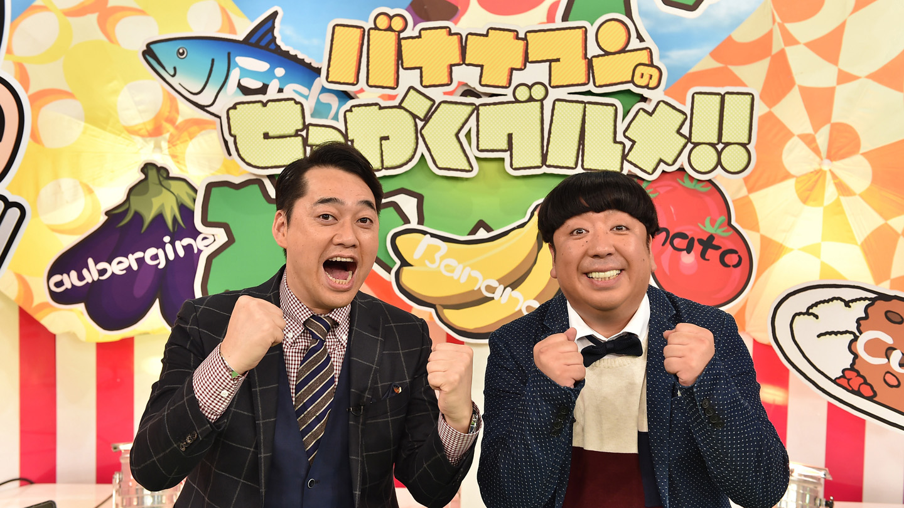
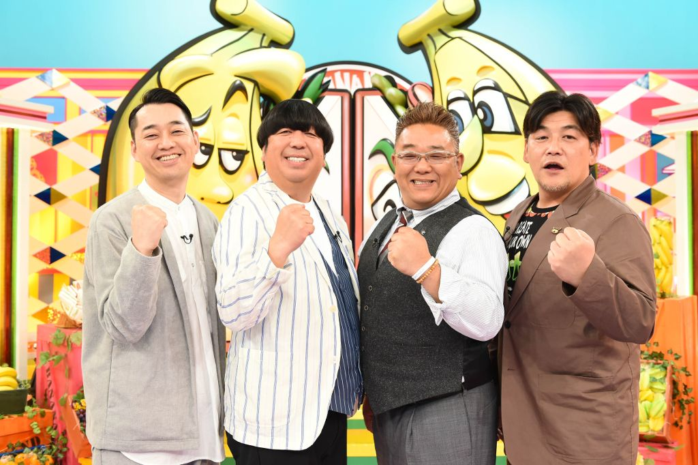
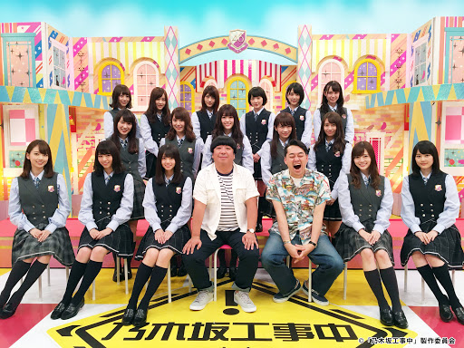
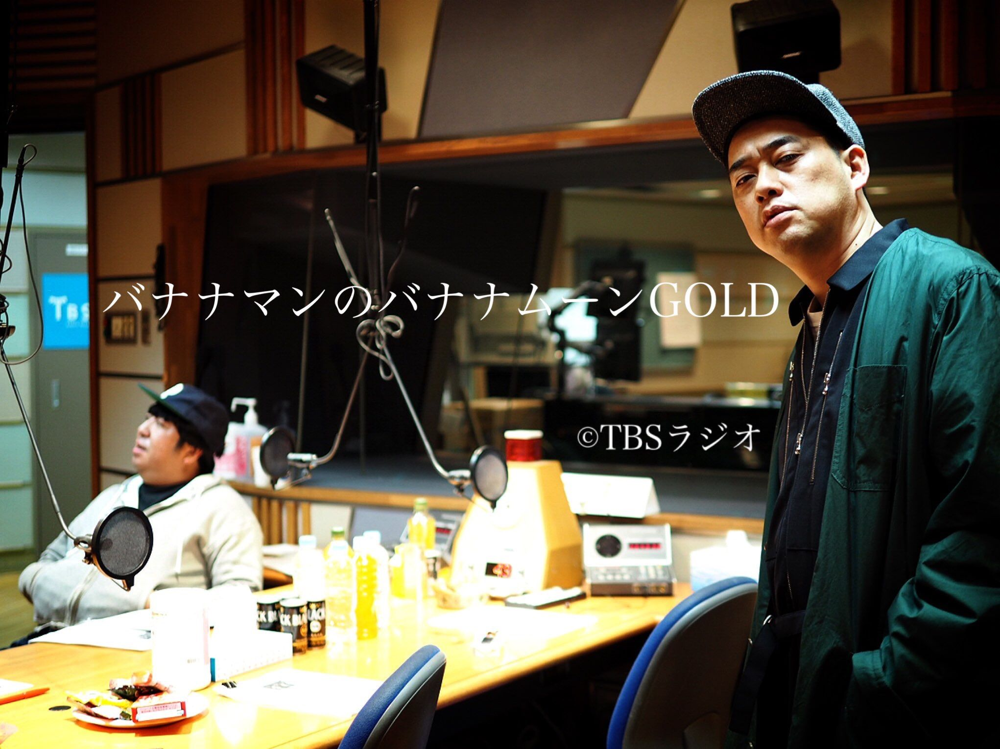
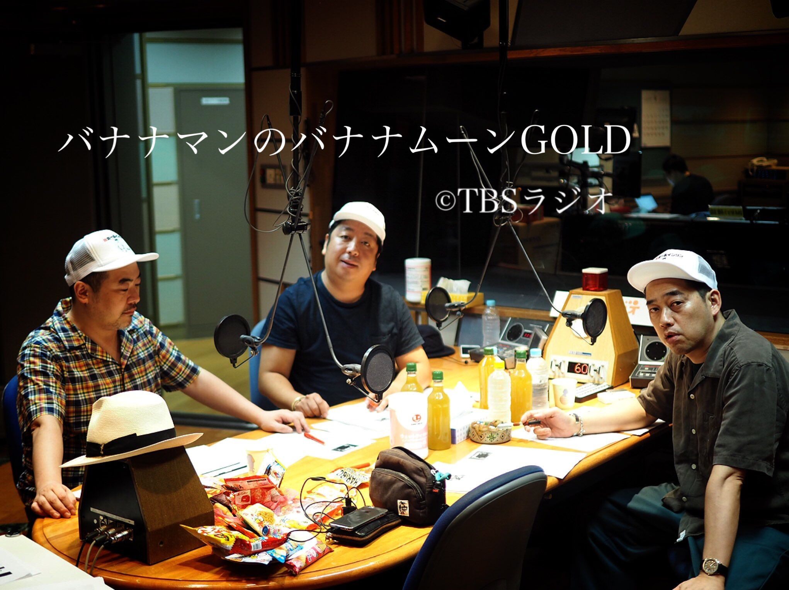
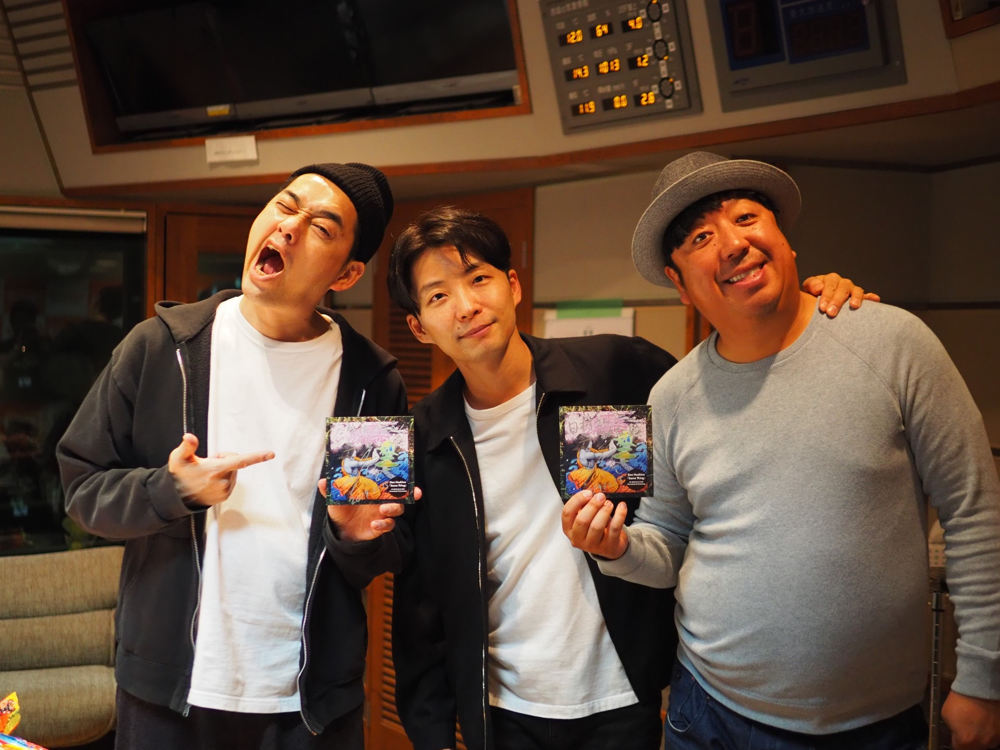
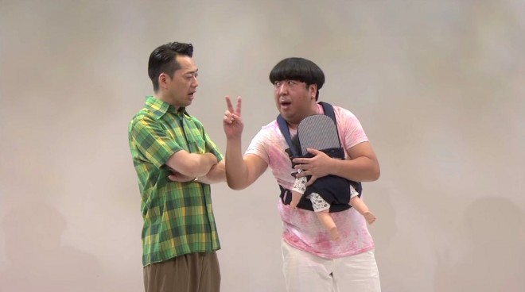
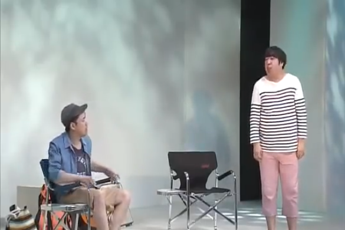
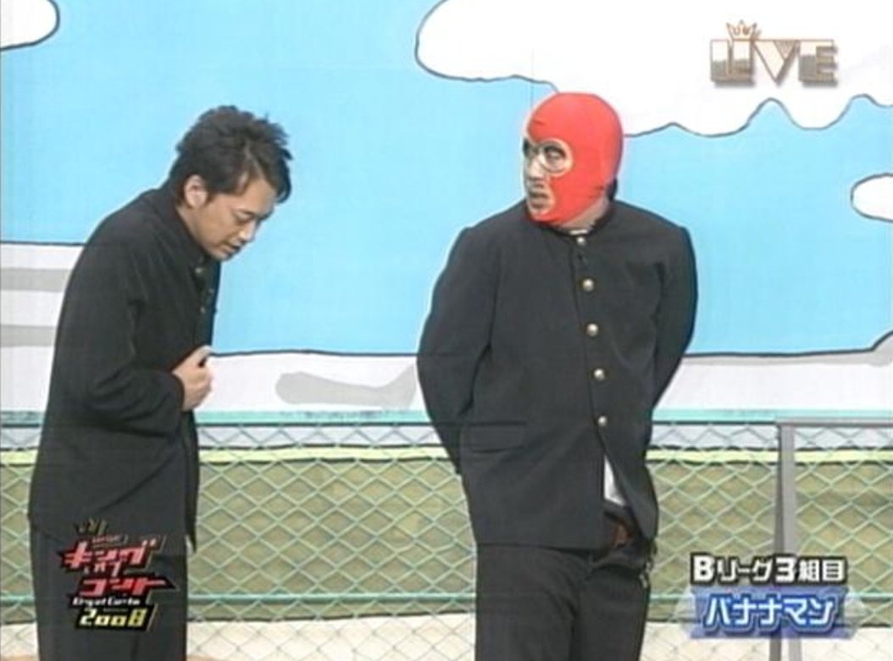

バナナマン
ここでは僕の好きな芸人のバナナマンについて紹介します。
テレビ



バナナマンは最近だとせっかくグルメやバナナサンドなどたくさんのテレビに出ています。また今は終わってしまいましたが、イロモネアやそんなバカなマン、バナナ炎、ドライブスリーなどがすごく好きでした。
ラジオ



ラジオの「バナナムーンGOLD」ではテレビよりもっとふざていて、イジりイジられ、掛け合いが面白いです。フリートークでなぜここまで面白いのか不思議です。またリスナーのメールも秀逸です。バナナムーンにはバナナマンだけでなく作家のオークラ、ADのジャニオタ、ドロボーなどが出ています。それとゲストで星野源や森山直太朗、中村倫也、大島麻衣、野呂佳代、東京03などの芸人、他には日村さんの同級生のスズキタケヤスやソメヤまで来てファミリー感があります。
コント



コントは、日常のちょっとしたズレだったり、ドラマがあったり、どれも綿密で引き込まれてしまいます。伏線回収や予想外のオチもあり、驚いたり、感動できるもの、狂気や恐怖を感じるキャラや内容のコントもあります。何も考えず笑えるコントもあるので幅広くてどれも最高です。
バナナマンの魅力
二人が悪ふざけをしたり、歌ったり、息の合った掛け合いをするのが面白いです。また、二人ともボケとツッコミが両方出来るところ、日村さんのものまねや体を張るところ、設楽さんのイジりやドSなところ、コントなどバナナマンには魅力がいっぱいです。でもやっぱり二人の仲が良い事が一番の魅力ではないでしょうか。これからもバナナマンを応援していきたいと思います。